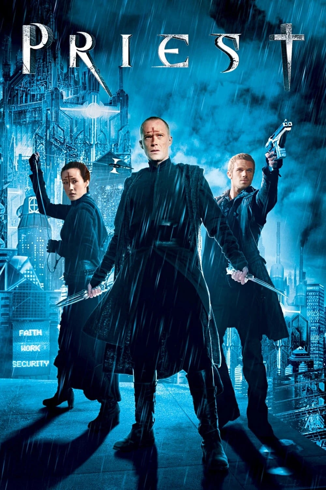

Мировая премьера: 13 мая 2011
Слоган: И один в поле воин.
Сюжет: После долгой кровопролитной войны людей с вампирами полчища свирепых вурдалаков были почти полностью уничтожены. Но когда бесследно исчезает племянница Пастыря, а его родных жестоко убивают, он понимает, что Церковь, заполучившая власть, скрывает страшную правду: вампиры готовятся нанести новый удар. Рискуя быть отлучённым от Церкви и нарушая священную клятву, Пастырь вместе с шерифом и монахиней-воительницей отправляется за девушкой в логово вампиров – пока ещё есть кого спасать...
Режиссёр: Скотт Стюарт
В основе: Комикс Мина-Ву Хунга "Священник" (Южная Корея, 1998-2007)
В ролях: |
Пол Беттани | Пастырь |
| Кэм Жиганде | Хикс | |
| Карл Урбан | Блэк Хэт | |
| Мэгги Кью | Монахиня | |
| Кристофер Пламмер | Монсеньор Орелас | |
| Стивен Мойер | Оуэн Пейс | |
| Лили Коллинз | Люси Пейс | |
| Брэд Дуриф | Продавец | |
| Алан Дэйл | Монсеньор Чемберлен | |
| Мэдхен Амик | Шэннон Пейс |
Бюджет: $ 60 млн.
Кассовые сборы в США: $ 29 млн.
Кассовые сборы в мире: $ 78 млн.
Продолжительность: 1 ч. 20 мин.
Рейтинг: 5.7